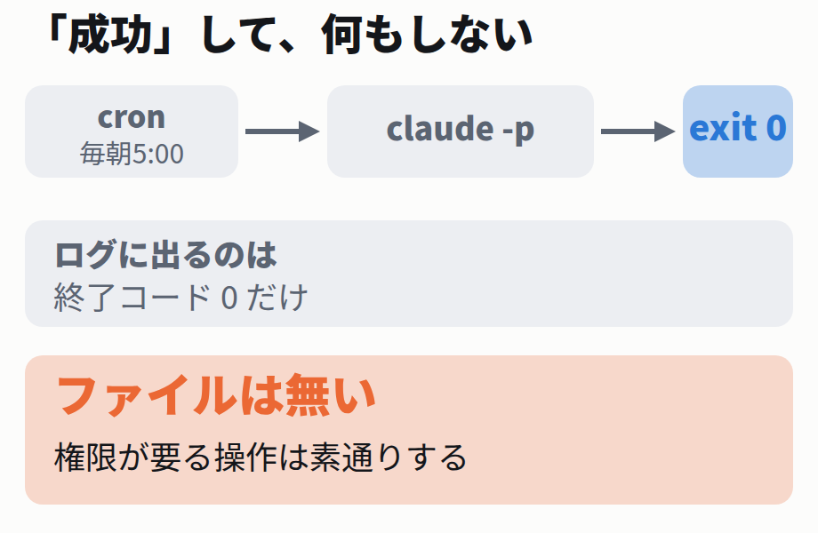

まず、いちばん素朴な使い方から始めます。-p（--print）を付けると、Claude Code は対話画面を開かずに、答えを標準出力に吐いて終わります。パイプに繋げる形です。
計算させるだけなら、何も要らない
claude -p "1+1は？数字だけ"
段2 の実出力
2
exit=0ここまでは期待どおりです。では、ファイルを1つ作らせてみます。自動化でやりたいのは、たいていこちら側です。
同じ形で、書き込みを頼む
claude -p "hello.txt を作り中身を hi に"
段3 の実出力
exit=0
--- 応答 ---
ファイル書き込みの許可が必要なようです
--- 出来たファイル ---
(hello.txt は無い)Claude は「許可が要る」と言い、そこで終わりました。ファイルは1つも出来ていません。それでも終了コードは 0 です。
対話画面なら、ここで「許可しますか？」と聞かれて人が押します。無人だと、押す人がいません。押されないまま、Claude は「できませんでした」と丁寧に報告して正常終了します。
cron に置いた場合、ログに残るのは終了コードだけです。0 が返っているので、監視の仕組みは何も鳴りません。毎朝そのまま、何もしない仕事が走り続けます。
